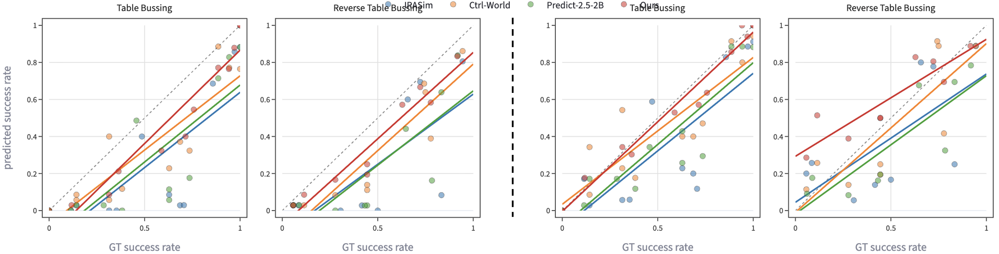

Problem
Briefly describe the challenge your paper addresses and why it is important.
CoRL Submission 2026
A concise one-sentence summary of the paper contribution goes here.
Evaluating generalist robot manipulation policies in the real world is expensive, slow, and difficult to scale. Action-conditioned video world models offer a scalable alternative by simulating policy rollouts in imagination, but adapting them to real-world manipulation is hard: autoregressive rollouts accumulate drift, multi-camera observations must stay mutually consistent, and the evaluator must generalize to policies unlike its training data. We show that a pre-trained Unified Video Action (UVA) model is a faithful policy evaluator. Because UVA jointly models forward dynamics (predicting frames from actions) and inverse dynamics (predicting actions from frames), it anchors generated rollouts to a physically plausible action manifold, mitigating the drift a forward-only model cannot penalize. We adapt a pre-trained UVA model into an evaluator with a fine-tuning recipe that jointly trains multi-view forward dynamics, a cross-view reference mode, and inverse dynamics, and we repurpose its inverse-dynamics head as a per-chunk uncertainty signal that terminates unreliable rollouts at no extra cost and supplies context for automatic vision-language- model annotation. Built on the pre-trained video foundation model, our evaluator attains a closed-loop Pearson correlation of 0.929 and MMRV of 0.119 across 7 real-world VLAs, outperforming all video-model-based baselines. It generalizes to a task-semantic shift absent from its fine-tuning data and, beyond matching aggregate success rates, reproduces the specific failure modes that policies exhibit in real-world rollouts, enabling diagnostic use rather than ranking alone.
Briefly describe the challenge your paper addresses and why it is important.
Explain the central idea behind your method in a few sentences.
List the main contributions, such as a new model, benchmark, dataset, analysis, or application.
Compare UVA-Eval against real-world policy success rates and video-model-based baselines.

Show how cross-view reference mode, and inverse dynamics contribute to evaluator fidelity via the following ablation study.
We compare online world model rollouts with and without cross-view reference mode. When the robot moves outside of the workspace and returns, cross-view reference mode helps the model better recover the scene within the workspace for the wrist camera.
We compare the offline world model rollouts with and without inverse dynamics (ID) joint training. We find that the ID joint training prevent the rollouts from drifting away from the ground-truth rollout.
Visualize inverse-dynamics uncertainty as a signal for terminating unreliable imagined rollouts.
Prompt: pick up blue bowl and put it in bin
Loading uncertainty visualization...
Prompt: pick up chip bag and throw it away
Loading uncertainty visualization...